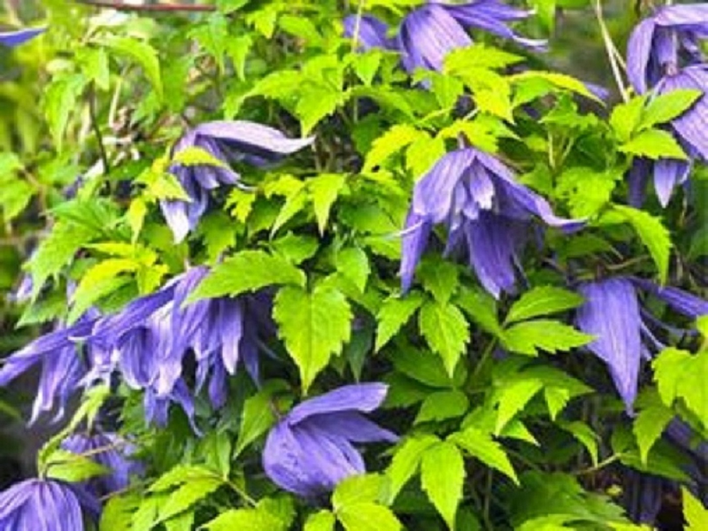

Pnącza to rośliny o wiotkich i długich pędach, dzięki którym są w stanie wspinać się po różnego rodzaju przeszkodach na znaczne wysokości – nawet kilkanaście metrów. Pnącza bardzo chętnie są wybierane do ogrodów ze względu na ich szybki wzrost. Pnące pędy potrafią wspinać się za pomocą czepnych m. in. wąsów, kolców, a starannie prowadzone potrafią tworzyć porośnięte ściany, parawany tworząc naturalną ochronę przed pyłem, kurzem. Pnącza są świetnym sposobem na zakrycie nieestetycznych miejsc w ogrodzie. Dzięki temu, że można bardzo łatwo prowadzić pnące pędy, rośliny te potrzebują w ogrodzie stosunkowo niewiele miejsca. Zdecydowana większość dostępnych roślin dobrze znosi nasz klimat i nie ma zbyt wielkich wymagań uprawowych.
Znajdą Państwo u nas:
Powojnik
Hortensja Pnąca
Milin Amerykański
Wiciokrzew
Winobluszcz
Bluszcz
Aktinidia
